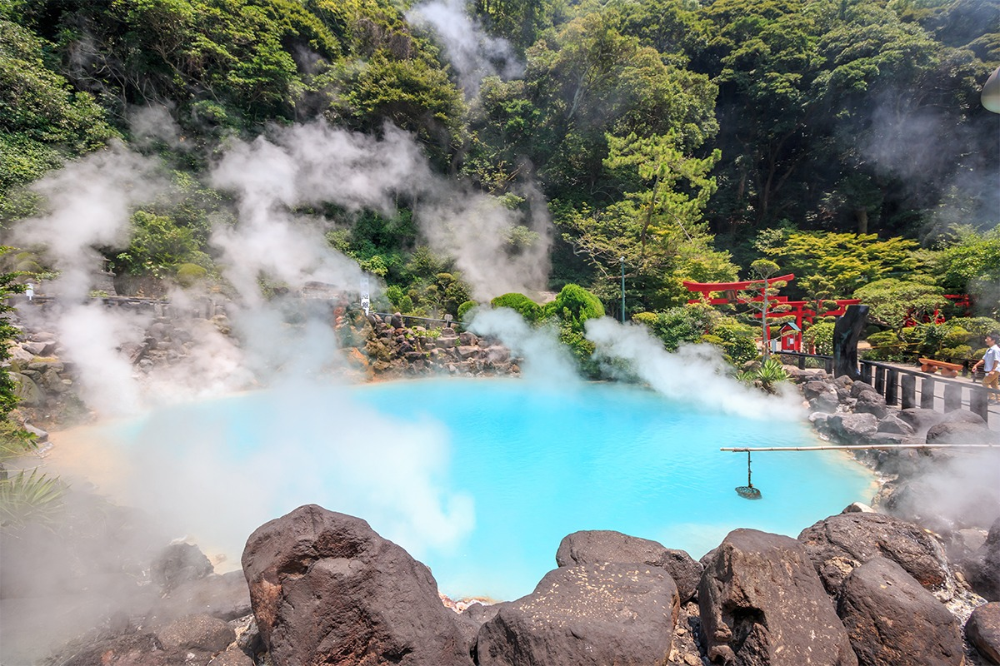
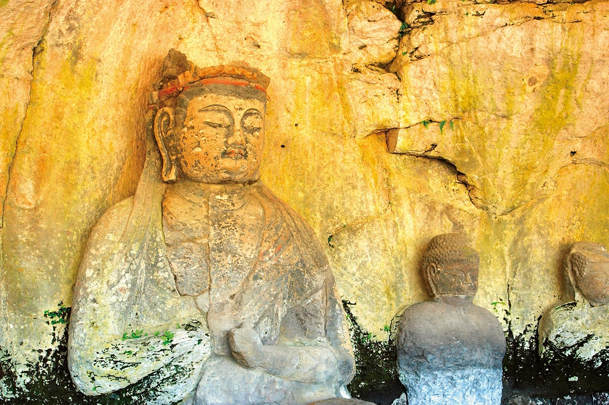
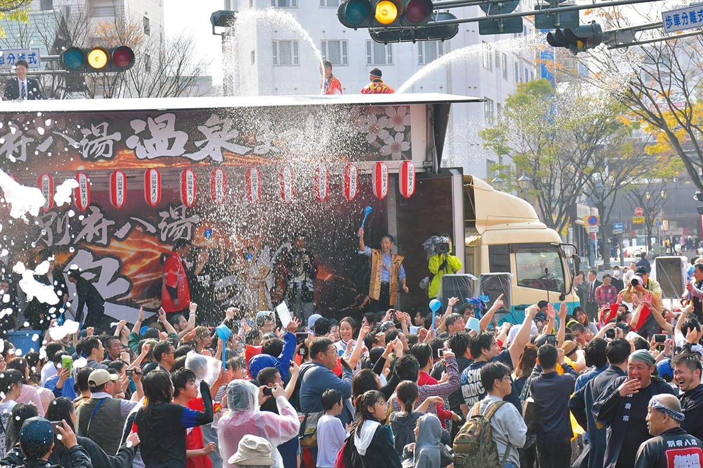
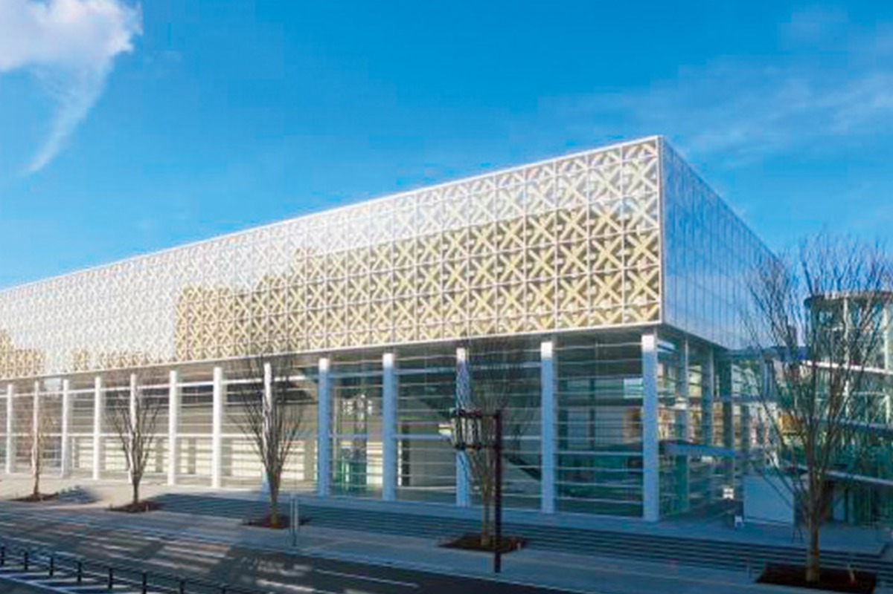
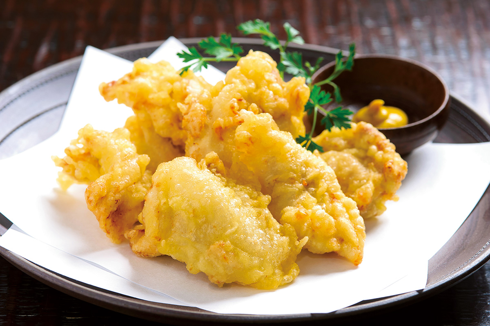
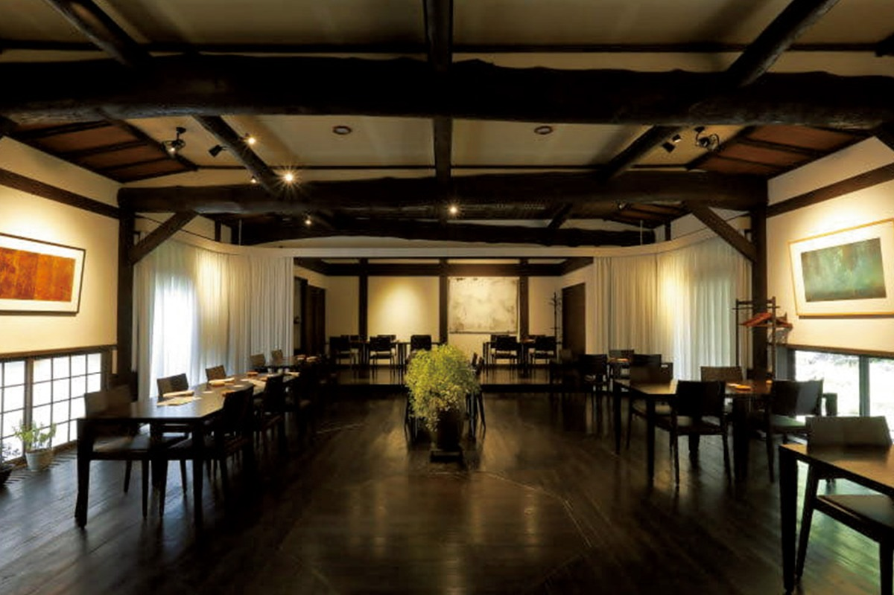
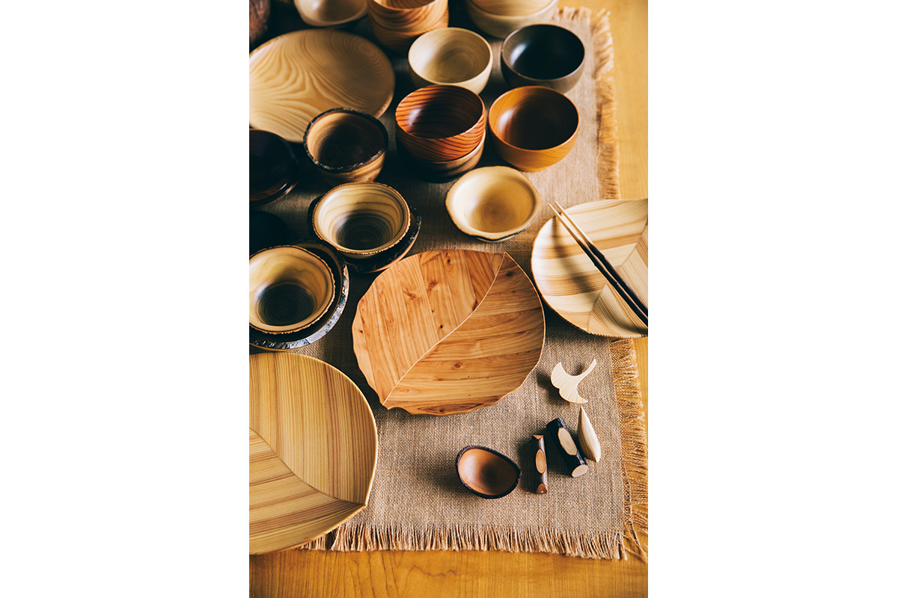
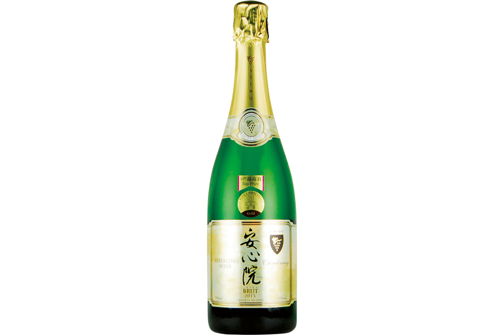
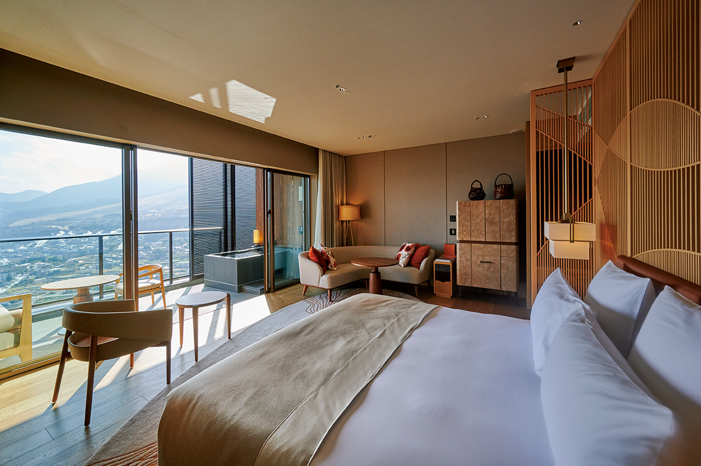

Префектура Оита
Оита: кипящие источники, каменные будды в скале и курица в кляре

Вода насыщенного синего цвета клубится паром в каменной чаше, рядом стоят камни и оградка тории.
Префектура, где число источников и объём выходящей воды первые в стране, а школы и больницы топят бассейны горячей водой. Разбираем, за чем ехать в Оиту: от синего котла на горячем поле до каменных будд, вырезанных прямо в склоне.
О префектуре
Край, который зовут «префектурой горячих источников»
Здесь стоят Бэппу и Юфуин, одни из самых известных курортов страны, а по числу источников и объёму изливающейся воды префектура держит первое место в Японии. В Бэппу почти все школьные бассейны и больничные ванны греются на источнике, и есть купальни, где вход стоит 110 иен, потому горячая вода здесь часть повседневной жизни.
Местные знаменитости это рыба: сайра и адзи, отловленные в проливе, и камбала заливов. В городе Накацу особенно много специализированных заведений, и его называют святым местом жареной курицы, а тэмпура из курицы появилась, по одной из версий, в 1962 году в столовой города Оита и стала домашним блюдом.
Имя префектуры было принято только в эпоху Мэйдзи. По «Фудоки провинции Бунго», легендарный император Кэйко, придя сюда, сказал: как велика эта земля, потому её назвали «страной Великих полей», а позже иероглифы записи сменились на нынешние.
Что посмотреть
Будды, вырезанные в туфе
Каменные будды Усуки
Фигуры вырезаны прямо в скальной стене из вулканического туфа. Их создавали с конца эпохи Хэйан до эпохи Камакура, и эти изображения первыми среди каменных будд получили статус национального сокровища.

- Адрес
- 804-1 Fukata, Usuki, Oita
- Справки
- управление каменных будд Усуки
- Телефон
- +81 972-65-3300
Что ещё посмотреть
- Ущелье Яба, скалы и вода на границе с Фукуокой
- Святилище Уса дзингу, главный храм всех святилищ Хатимана
- Храм Мондзю-сэндзи, горный храм с каменной лестницей
Праздники
Сто купален открывают двери
Праздник восьми источников Бэппу
Празднику больше ста лет. На время праздника около сотни купален города открывают двери бесплатно, а вместе с этим идут обряды с обливанием водой и другие события на улицах.

- Период
- 1 апреля и первые выходные месяца
- Место
- город Бэппу, Оита
Другие праздники
- Праздник Гион в Хита, украшения и шествие у реки
- Праздник Танабаты в Оите, фонари и танцы в центре
- Танец бон на острове Химэсима, вечерние хороводы у моря
Музеи и архитектура
Стеклянный фасад первого проекта
Префектурный музей искусств Оиты
Музей стал первой публичной галереей в стране, которую спроектировал архитектор Сигэру Бан. Собрание строится на работах авторов, связанных с префектурой, а само здание с решёткой и стеклом считают образцом его раннего стиля.

- Адрес
- 2-1 Kotobukimachi, Oita, Oita
- Телефон
- +81 97-533-4500
- Сайт
- opam.jp
Что ещё посмотреть
- Художественная площадь Атопрадза, выставочный зал в центре города
- Музей искусств города Оита, местное собрание живописи
- Мемориальный музей Асакуры Фумио, скульптура мастера
Местная кухня
Курица в кляре и с соусом понзу
Торитэн из Оиты
Мясо и кляр у этого блюда получаются пышными, а едят его обычно с уксусно-соевым соусом или с понзу. Мясо заранее хорошо приправляют, а кляр делают тонким, потому курица остаётся сочной.

Что ещё попробовать
- Рюкю, сырая рыба в соевом соусе с яйцом
- Суп данго-дзиру, густой суп с клёцками из муки
- Донбури с курицей, рис с мясом и сладким соусом
Где поесть
Итальянский стол на местных продуктах
Отто э Сеттэ Оита
Продукты здесь почти все из префектуры, и в меню включены блюда с приготовлением на пару от горячего источника, как это делают в Бэппу. Такой подход даёт кухню, в которой видно место и сезон.

- Адрес
- Ida 2-kumi, Beppu, Oita
- Телефон
- +81 977-66-4411
- Часы
- 12:00-14:00, 18:00-21:00
- Выходные
- вторник и среда
Ремёсла
Посуда из леса у деревни
Мастерская Аторье Токи
Мастера берут дерево из окрестных рощ и тонкомер после прореживания и делают утварь ручной работы. Цвет и текстура дерева в каждой вещи свои, а со временем поверхность становится глубже по тону.

- Телефон
- +81 977-84-5171
- Сайт
- ateliertoki.jp
Что привезти
Игристое из винограда Адзиму
Игристое вино Адзиму
Напиток делают полностью из шардоне, собранного в посёлке Адзиму, и выдерживают больше года, потому вино получается сухим и суставным по характеру.

- Телефон
- +81 978-34-2210
Где остановиться
Восемьдесят девять комнат над Бэппу
Курорт и спа Интерконтиненталь Бэппу
Отель делает упор на простор: часть комнат имеет собственный открытый горячий источник на террасе, и из воды открывается вид на город и горы.

- Адрес
- 499-18 Kannawa, Beppu, Oita
- Телефон
- +81 977-66-1000
- Комнат
- 89, из них 21 с открытой купальней
- Цена
- от 73 720 иен за ночь с двумя приёмами пищи на человека, без налогов и сборов
- Сайт
- anaicbeppu.com
Местный диалект
Как здесь говорят «очень вкусно»
- синкэн ойсий наочень вкусно
- синкэн окота доочень сильно рассердился
- утатий кото, суру нане делай ничего жалкого
- анси ва эрасий натот человек милый
Рекорды
В чём Оита первая
- №1 производство цитруса кабосу
- №1 общее число источников
- №1 число туннелей
Вопросы и ответы
Что ещё спрашивают об Оите
Какое святилище считается главным среди всех храмов Хатимана?
Святилище Уса дзингу в городе Уса. Его основание относят к 725 году, и оно упомянуто в «Нихон сёки». Внутри есть дерево возрастом около восьмисот лет: считается, что если обойти его, касаясь ствола, придёт удача.
Какое блюдо делают из плоской лапши с соевой мукой?
Ясэума. По преданию, знатный человек эпохи Хэйан попросил свою кормилицу Ясэ приготовить это блюдо, и оно так понравилось, что он стал просить «Ясэ, вкусно», откуда и пошло название.
Справочник
Оита в цифрах
Общие сведения
| Административный центр | Оита |
| Муниципалитеты | 14 городов, 3 посёлка, 1 село |
| Площадь | 6341 кв. км |
| Население | 1,14 млн человек |
| Плотность населения | 180,4 человека на кв. км |
| Туристов в год | 10,26 млн |
| Дерево префектуры | слива бунго |
| Цветок префектуры | слива бунго |
| Птица префектуры | японская белоглазка мэдзиро |
Климат
| Средняя температура | +17,1 |
| Максимум | +33,9 |
| Минимум | +1,5 |
| Осадки | 1663 мм |
| Ясных дней | 34 |
| Дождливых дней | 101 |
| Снежных дней | 14 |
Для путешественника
| Онсэнов | 64 |
| Гостиниц и рёканов | 1107 |
| Музеев искусств | 17 |
| Музеев | 13 |
| Митиноэки, придорожных станций | 25 |
| Национальное сокровище | главный зал святилища Уса дзингу |
| Важных культурных ценностей | 83, из них 4 национальных сокровища |
| Исторических мест | 41 |
| Живописных мест | 3 |
| Природных памятников | 23 |
| Национальные парки | Асо-Кудзю, Ниппо-кайган, Соба-катамуки и ещё два |
Природные памятники
- Место обитания рыбы ивамэ в реке Оно, река с редкой рыбой
- Сообщество брусники на горах Коконэ, растения высокогорья
- Старое дерево мандарина у Осаки, долгоживущее цитрусовое дерево
- Малая сталактитовая пещера Кохан, пещера с натёками
- Камфорное дерево святилища Одзихара, старое дерево у храма